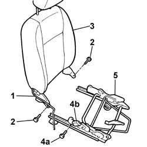

7045A69 SUPPORT/for GUIDES of front seat with lift device (one), left or right - R.R. with seat removed
- Path
- Procedures > 70 FITTINGS > 7045 FRONT SEATS > 7045A front seat assembly > 7045A69 SUPPORT/for GUIDES of front seat with lift device (one), left or right - R.R. with seat removed
- Kind
- repair procedure (removal / refitting; the operation number is the code)
- Applies to
- all engines; all production periods
- Interactive page
- https://sloeber94.github.io/elrnDB-fPnd/en/#/2753245
Applies to: all engines; all production periods
 Removing
Removing
 Refitting
Refitting7045A34 manual device for adjusting seat height - r r with seat removed
7045A62 joints of driver`s side front seat lift device - r r with seat disconnected
Remove the outer guard which is a press fit on the mounting/guide.
Remove the connector from the mounting bracket.
1. Release the side bag wiring from the frame.
2. Undo the bolts fixing the backrest assembly to the front seat frame.
3. Remove the backrest assembly, then raise it in order to release the slot from the pin on the guides.
4. Undo the fixing bolt (4a) and remove the front seat belt handle (4b).
5. Keep the height-adjustable front seat mounting/guide.

Applies to: all engines; all production periods
Refitting
RemovingCheck the condition of the mounting/guide.
Position the backrest complete with slot by the pin on the mounting/guide.
Tighten the bolts fixing the backrest to the mounting/guide.
Position the front seat belt mounting rod and tighten the fixing bolt to the recommended torque.
 | Fastening | Component | Ø | Value (daNm) |
|---|---|---|---|---|
- | Bolt | FRONT SEAT BELT BRANCH WITH ATTACHMENT BUCKLE.. . | M10 | 4 |
Fasten the side bag connector to the mounting bracket.
Fit the inner guard, which is a press fit, in the housing in the front seat.
7045A62 joints of driver`s side front seat lift device - r r with seat disconnected
7045A34 manual device for adjusting seat height - r r with seat removed
Topics linked from this page (2)
- 7045A34 manual device for adjusting seat height - r r with seat removed
- 7045A62 joints of driver`s side front seat lift device - r r with seat disconnected